Hosea: Look for infidelity, which is compared to a broken marriage;
people turn to idols rather than God (ch. 1-3).
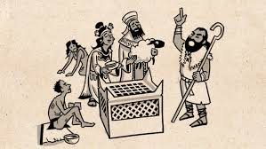
Amos: Seek for instances of community injustice, such as mistreating
poor people while upholding religious customs (5:11–12).
Joel: In times of crisis, watch out for spiritual carelessness and a
failure to seek God (1:2–4).
Obadiah: Keep an eye out for acts of aggression against a brother
nation and national pride (vv. 3–4, 10).
Jonah: Look for disobedience and lack of compassion, especially from
God's messenger (1:1–3; 4:1–2).
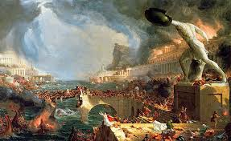
Nahum: Seek for the brutality, aggression, and power of a strong
kingdom (3:1–4).
Micah: Identify acts of social injustice and corruption in leadership with specific attention to those who are poor and oppressed (2:1-2; 3:1-3).
Habakkuk: Identify violence and injustice versus why should God permit evil during this time period of hardship (1:2-4).
Zephaniah: Identify instances of idolatry, pride, and immoral behavior existing in Judah (1:4-6).
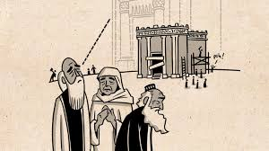
Haggai: Be on the lookout for spiritual neglect/ misplaced priorities– people are more concerned with their own lives than spending time in/ around God’s house (1:4).
Zechariah: Be on the lookout for spiritual apathy and hypocrisy, particularly by those in leadership positions (7:4-6).
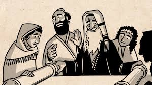
Malachi: Be on the lookout for religious indifference (dishonoring God through carelessness in worship) (1:6-8).
Warning / Judgment Given
Hosea: Judgment is captured as exile and the removal of blessings,
but not complete doom (9:3–6).
Amos: According to God, religious deeds will not escape the
inevitable judgment (5:18–20).
Joel: Natural disasters serve as a picture for judgment and "the Day
of the Lord" (2:1–11).
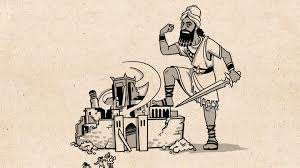
Obadiah: Edom is proclaimed to be completely destroyed and
humiliated (vv. 15–16).
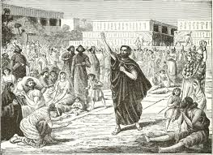
Jonah: God's authority over nature and the impact of disobedience
serve as examples of judgment (1:4–17).
Nahum: Nineveh will undoubtedly face judgement and total devastation
(1:8; 3:19).
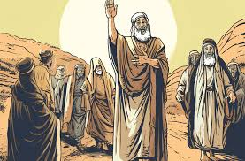
Micah: According to God, Jerusalem is to be destroyed due to its wickedness (3:12).
Habakkuk: God warns that Babylon will destroy the Israelites but this is uncomfortable for the prophet (1:6).
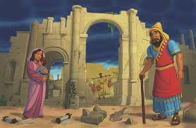
Zephaniah: Judgment is described as “The Day of the Lord” and will be incredibly horrific (1:14-18).
Haggai: There is a warning from God regarding disobedience causing a lack of blessing (1:9-11).
Zechariah: Discipline and refining will result in judgement, but will not result in complete destruction (13:8-9).
Malachi: God will judge the unfaithful and unjust (3:5).
Mercy / Hope Shown
Hosea: Restoration imagery: Following repentance, God mends and
rebuilds relationships (14:1-4).
Amos: A brief message of hope: God keeps the last days alive
(9:11–15).
Joel: Following repentance, God promises restoration and the
outpouring of His Spirit (2:12–13, 28–29).
Obadiah: God's justice implies mercy, but it isn't made clear to
Edom.
Jonah: God is merciful to sinners who turn from their sins,
including rivals (3:10).
Nahum: God is a place of refuge for those who trust Him (1:7), which
is an indirect way of expressing hope.
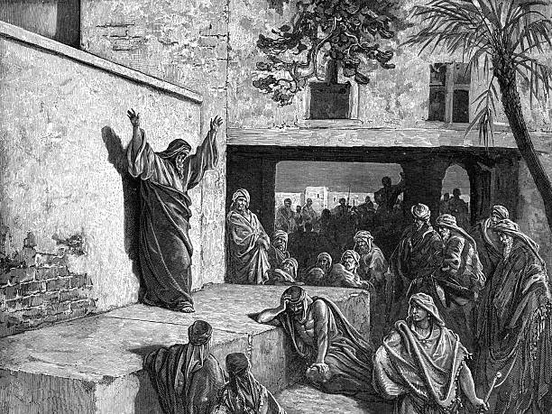
Micah: Hope for a future peace and the ability to restore Israel under God's leadership (4:1-4).
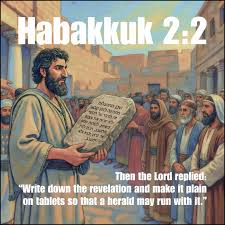
Habakkuk: Faith and trust in God can help to provide a sense of hope and comfort during times of trial or pain (2:4).
Zephaniah: The Lord has promised to bring about restoration to His faithful remnant (3:9–13).
Haggai: The Lord has promised renewed blessings when His people obey Him (2:18–19).
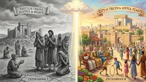
Zechariah: Messianic hope is expressed through the prophetic promise that God will restore His people and dwell among His people (8:3; 9:9).
Malachi: A messenger will be sent to heal those who believe (3:1, 4:2).
God’s Character Revealed
Hosea: Even being deceived, God remains patient, loving, and
faithful (11:1-4).
Amos: God rejects meaningless worship because he is just and
righteous (5:24).
Joel: God is merciful, kind, and patient (2:13).
Obadiah: According to verse 15, God is the ultimate judge of all
nations.
Jonah: Even in the face of adversaries, God is kind and
compassionate (4:2).
Nahum: God is strong, just, and does not submit to wickedness
(1:2-3).
Micah: God wants us to be righteous and gives us justice, mercy, and loyalty (6:8).
Habakkuk: God has all authority over creation and does not act unjustly, even if His actions are difficult to understand (2:20).
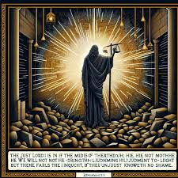
Zephaniah: God is completely holy and powerful; He will show mercy to those who are humbled (3:17).
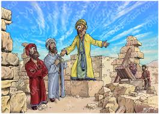
Haggai: "God displays His faithfulness and responds to His people by giving them confidence through His work. (1:13)
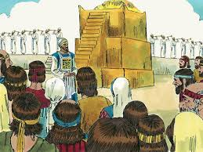
Zechariah: God's patience, faithfulness, and desire to redeem the entire world means He has a purpose for history. (4:10)
Malachi: God's unchanging nature and faithfulness requires that we give Him honor and obey Him. (3:6)
Human Responsibility
Hosea: People must turn back to God in a real manner, not merely on
the outside (6:1–3).
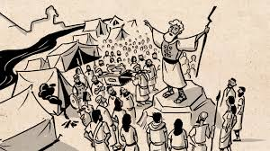
Amos: People must genuinely seek God, act justly, and pursue
goodness (5:14–15).
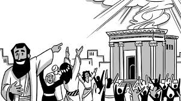
Joel: Repentance requires sincere hearts, not just procedures
(2:12).
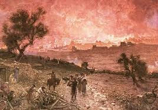
Obadiah: Nations are responsible for their treatment of other people
(v. 10).
Jonah: God's followers are required to share His mercy and respond
to His summons (1:3; 4:11).
Nahum: Rather of being afraid of wicked forces, people are exhorted
to trust God's justice (1:7).
Micah: The Lord requires people to do what is just, love mercy, and act justly. (6:8)"
Habakkuk: The Lord encourages us to live in a state of faith, rather than of fear (2:4).
Zephaniah: We need to have a desire for humility and to live righteously (2:3).
Haggai: The Lord commands His People to put God first, obey God's commandments (1:8).
Zechariah: We are called to return unto the Lord and live with Faithfulness (1:3).
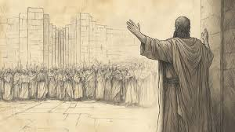
Malachi: The Lord calls upon His People to Worship Him, Obey Him and Commit to Him (3:7).
Reflection Questions
+
Question 1: What patterns do you see in how God
responds to sin and repentance across these six prophets?
Through these six prophets, God exposed sin to the world and
warned the world of the coming judgment and also provided the
opportunity to repent for sin before the judgment occurred. For
those who sincerely repent from their sin, God shows mercy and
restores them. However, for those who continue to sin without
repentance, judgment is assured. These six prophets highlight
God's love through the willingness to forgive the sinner and also
His righteousness through the conviction of sin and punishment of
sin.
+
Question 2: What impact has studying these
prophets had on your personal relationship with God and ministry?
During my study of the prophets, I gained a greater understanding
of God's holiness, justice, and mercy. I learned that genuine
repentance is from the heart and is not just a matter of action. I
have been strengthened in my faith and motivated to obey God and
serve those in need with compassion and responsibility.
Prophet Data Visualization
Prophet Writing Dates Timeline
Timeline Overview
This timeline shows the approximate writing dates of the Minor
Prophets, spanning from the 9th to the 5th century BC.
Joel: Around 835 BC - Judah
Amos: Around 760 BC - Southern Kingdom
Hosea: Around 750 BC - Northern Kingdom
Jonah: Around 780 BC - Nineveh
Micah: Around 735 BC - Judah
Nahum: Around 650 BC - Nineveh
Zephaniah: Around 640 BC - Judah
Habakkuk: Around 608 BC - Judah
Obadiah: Around 586 BC - Edom
Haggai: Around 520 BC - Judah
Zechariah: Around 520 BC - Judah
Malachi: Around 430 BC - Judah
Prophet Interconnections
Key Relationships
The prophets often addressed similar themes and sometimes
referenced each other. This chart shows the interconnected nature
of their messages.
Judgment Theme: All prophets warn of coming
judgment
Mercy Theme: Hope and restoration for the
repentant
Geographical Focus: Israel, Judah, and
surrounding nations
Historical Context: Assyrian and Babylonian
periods
Six Prophets Overview
Brief Summary
A concise overview of the six prophets: Hosea, Amos, Joel, Obadiah, Jonah, and Nahum, highlighting their key themes.
Hosea: Covenant love and infidelity
Amos: Social justice and righteousness
Joel: Day of the Lord and restoration
Obadiah: Judgment on Edom
Jonah: God's mercy and compassion
Nahum: Judgment on wickedness
Search Prophets
Book Details
Hosea
Theme: God's covenant love and faithfulness
despite Israel's unfaithfulness
Purpose: To illustrate God's persistent love and
the consequences of spiritual adultery
To Whom: The Northern Kingdom of Israel
Special Message: Restoration and healing come
through repentance and return to God
Amos
Theme: Social justice and righteousness
Purpose: To condemn oppression and injustice in
Israel
To Whom: The people of Israel, particularly the
wealthy and powerful
Special Message: True worship requires justice
and righteousness, not just rituals
Joel
Theme: The Day of the Lord and restoration
Purpose: To call Judah to repentance in the face
of impending judgment
To Whom: The people of Judah
Special Message: Repentance leads to restoration
and the outpouring of God's Spirit
Obadiah
Theme: Judgment on Edom and God's sovereignty
Purpose: To prophesy against Edom's pride and
hostility toward Judah
To Whom: The nation of Edom
Special Message: Pride and aggression against
God's people will be judged
Jonah
Theme: God's mercy and compassion
Purpose: To demonstrate God's universal love and
willingness to forgive
To Whom: The people of Nineveh (Assyrians)
Special Message: God's mercy extends to all
nations who repent
Nahum
Theme: God's judgment on wickedness and comfort
for the faithful
Purpose: To assure Judah of Nineveh's impending
destruction
To Whom: The people of Judah
Special Message: God is a refuge for those who
trust Him and judge of the wicked
Micah
Theme: Social justice, judgment, and restoration
Purpose: To condemn social injustice and idolatry while promising restoration
To Whom: The people of Judah and Israel
Special Message: True religion involves justice, mercy, and humility before God
Habakkuk
Theme: Faith in God's sovereignty amid injustice
Purpose: To address the problem of evil and encourage faith in God's justice
To Whom: The people of Judah
Special Message: The righteous live by faith, trusting God's ultimate justice
Zephaniah
Theme: The Day of the Lord and purification
Purpose: To warn of coming judgment and call for repentance
To Whom: The people of Judah
Special Message: God will purify and restore the humble remnant
Haggai
Theme: Rebuilding the temple and God's presence
Purpose: To motivate the returned exiles to rebuild God's temple
To Whom: The returned exiles in Judah
Special Message: God's presence in the temple brings blessing and glory
Zechariah
Theme: Restoration, cleansing, and Messiah
Purpose: To encourage the rebuilding of Jerusalem and temple, and announce future restoration
To Whom: The returned exiles in Judah
Special Message: God promises complete restoration through the coming Messiah
Malachi
Theme: Covenant faithfulness and coming judgment
Purpose: To confront spiritual apathy and call for covenant renewal
To Whom: The post-exilic community in Judah
Special Message: God will send a messenger to prepare the way for His coming
Thank You for Exploring!
We hope this journey through the Minor Prophets has been
enlightening and inspiring.
Your Feedback Matters
Help us improve by sharing your thoughts about this interactive
guide.
Come back anytime to deepen your understanding of God's Word through
these ancient prophetic voices.